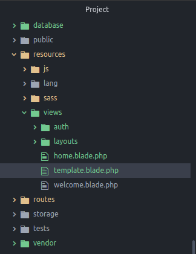
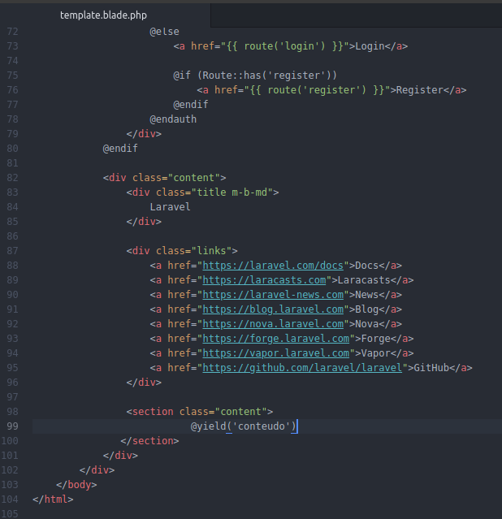
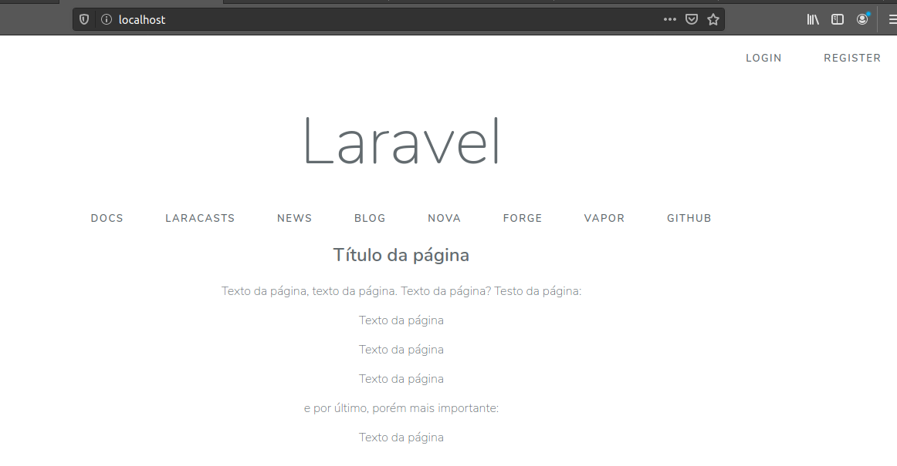
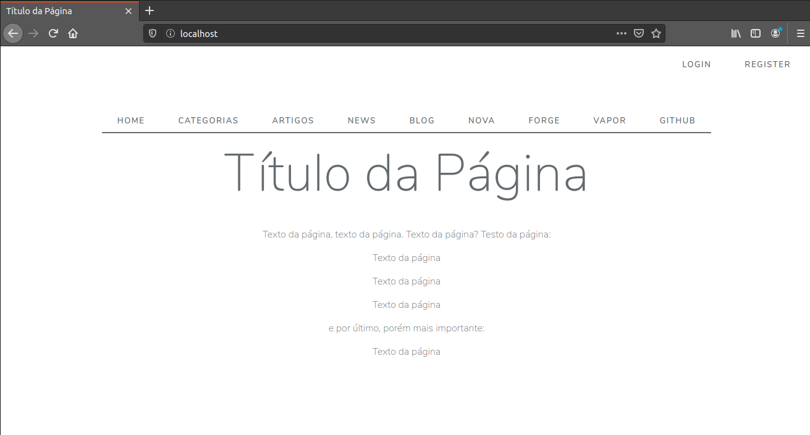

A View é a camada responsável pela parte visual do sistema, ela carrega as telas e formulários que serão exibidos ao usuário final do sistema.
O Laravel utiliza o Blade para gerenciar estas telas, o que nos fornece alguns comandos e padrões que nos ajudarão a agilizar nosso trabalho.
As views ficam na pasta resources/views do seu projeto. Você pode criar subpastas para organizar seu projeto.
O Blade também possui um sistema de templates, o qual implementaremos para que todas as páginas fiquem corretamente formatadas sem que precisemos copiar e colar códigos e estilos em todas elas assim o menu principal e estilos serão aplicados automaticamente em todas as views, e cada view que criarmos só precisará ter o básico para funcionar.
Para não perdermos tempo, vamos utilizar a própria página de boas vindas do Laravel como template, afinal o objetivo deste tutorial não é ensinar a estilizar páginas, então vamos usar o que já temos à mão.
Vamos criar uma cópia do arquivo welcome.blade.php e chamá-lo de template.blade.php (sim, todas as views processadas pelo blade devem ter a extensão .blade.php).

Vamos então alterar o template.blade.php criando uma sessão e colocando a marcação @yeld no local onde será exibida nossa view, seja ela um formulário ou o texto do artigo.
Colocarei neste exemplo o conteúdo abaixo do menu da página de boas vindas do Laravel.

Pronto, já temos um template básico.
Vamos criar uma nova página inicial para nosso site, ela será chamada index.blade.php e terá apenas um testo básico que será apresentado ao usuário que acessar nosso site.
Adicionaremos a marcação @extends para adicionar o template na view e as marcações @section e @endsection para adicionar o conteúdo ao template:
Vamos aposentar a view padrão welcome.blade.php e passar a usar nossa nova view index.blade.php a partir de agora.
Na pasta routes, abra o arquivo web.php e troque "welcome" por "index" para testarmos nossa view:
Salve o arquivo e atualize a página no navegador, o resultado deverá ser algo como:

Agora todas as views que criarmos seguindo este padrão terão a mesma aparência e formatação. E se precisarmos mudar algo basta aterar o template e todas as views implementarão a modificação.
Vamos melhorar um pouco nosso template, antes abra o arquivo config/app.php e altere o valor em 'name' => env('APP_NAME', 'Laravel') trocando por 'name' => env('APP_NAME', 'Meu Projeto'), onde 'Meu Projeto' é o nome de seu projeto. Chame como quiser. Colocamos aqui pois podemos referenciar em vários lugares do projeto, e se o nome do projeto mudar basta alterar em um único lugar.
No template, vamos alterar a tag title deixando da seguinte forma:
Assim iremos mostrar um nome personalizado para a página. Se não passarmos nenhum parâmetro será mostrado o nome do projeto (que definimos em config/app.php).
Faremos o mesmo com as tags keywords e description (otimizar o SEO, lembra?) logo abaixo da tag title:
Para melhorar um pouco a aparência, coloque a div que mostra o título depois dos links de navegação, e uma linha (hr) entre eles.
Aqui já adicionei no menu um link para /home para voltarmos a página inicial, e também para Categorias e outro para Artigos, e é com eles que vamos trabalhar agora.
O {{ asset('/') }} insere no link o caminho desde a pasta root (public) do projeto, assim o link não "quebra" caso você esteja em um subnível.
Finalizamos aqui nossa edição de template, agora iremos novamente modificar a view index e passar o título da página separadamente para organizar melhor nosso código:
E o resultado final ficou mais ou menos assim

Sim, dá pra melhorar mais, mas por enquanto isso serve. Mas você pode pôr a criatividade em prática e fazer modificações como quiser!